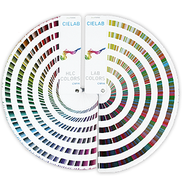

CIE L*a*b* bzw. CIE LAB or CIELAB (alternative Schreibweisen), ist ein Farbmodell, das alle Farben enthält, die das menschliche Auge wahrnehmen kann. Es geht daher über RGB oder CMYk hinaus, denn es ist nicht an ein spezifisches Ausgabegerät gebunden. Das Modell verwendet drei Parameter, um eine Farbe zu definieren, nämlich Helligkeit (L = Lightness), wobei 0 für Schwarz und 100 für Weiß steht, sowie die Farbgegensätze Rot-Grün (»a«) sowie Gelb-Blau (»b«).
Weil das CIE-LAB-Modell nicht unbedingt intuitiv zu verstehen ist, wurde eine Alternative namens CIE HLC entwickelt. In letzterer sind die drei Parameter Farbton (H =Hue), Helligkeit (L = Lightness) and Sättigung (C = Chroma). In bezug auf die Umrechnung und die Anwenderfreundlichkeit verhält sich HLC zu LAB in etwa wie HSV zu RGB.
Scribus 1.4.x kann im Gegensatz zur Nachfolgeversion noch nicht direkt mit Unterstützung für das CIE-LAB-Farbmodell in seinen Farbdialogen aufwarten. Der Grund für die Aufnahme der vier neuen Paletten in die 1.4er-Serie hatte dennoch einen pragmatischen Grund, nämlich die Verfügbarkeit von qualitativ hochwertigen Farbfächern zum Abmustern, die die genannten Farbmodelle verwenden, und zwar zu einem erschwinglichen Preis.
Die Fächer wurden nach dem derzeit bestmöglichen Offsetdruckstandard produziert, und die Farbabweichungen zwischen einzelnen Fächern sind weitaus geringer als zwischen denen bekannterer Hersteller. Darüber hinaus bewegen sich die Abweichungen in einem für die Druckindustrie tolerierbaren Rahmen. Jeder der beiden Fächer bietet die Farbwerte in CMYK, sRGB (und den entsprechenden Hex-Äquivalenten), CIE LAB und CIE HLC, und sie enthalten 986 (CIE LAB) bzw. 1032 (CIE HLC) Farben.
Selbstverständlich kann eine gedruckte Farbreferenz nicht das gesamte CIE-LAB-Farbspektrum wiedergeben, aber darum geht es auch gar nicht. Viel wichtiger ist, daß es sich bei CIE LAB um einen offenen und ohne jede Lizenzgebühr zugänglichen Standard handelt, der erstmals in zwei Farbfächern (samt Bedienungsanleitung) konsequent umgesetzt wurde: Wenn Sie den CIE-LAB-Fächer verwenden, können Sie die benötigten Farbbereiche mit Hilfe des Helligkeitskriteriums (L) finden, während das entscheidende Kriterium beim HLC-Fächer der Farbton (H) ist. Das mag anfangs etwas gewöhnungsbedürftig sein, erweist sich aber schnell als äußerst effektiv.
|  |
CIE-LAB- und CIE-HLC-Farbfächer |
Ab Version 1.4.6 enthält Scribus vier neue Farbpaletten, die mit den genannten Fächern verwendet werden können:
Falls Sie eine der CMYK-Paletten für den Offsetdruck verwenden möchten, achten Sie bitte darauf, das passende ICC profil zu verwenden bzw. zu installieren, in diesem Fall FOGRA39. Sie können dieses entweder beim dtp studio oldenburg oder bei der ECI herunterladen, wobei das ECI-Profil noch etwas besser ist. Was die sRGB-Werte angeht, sollte das mit Scribus ausgelieferte sRGB-Profil laut Informationen des Herstellers die gewünschten Farbwerte liefern.